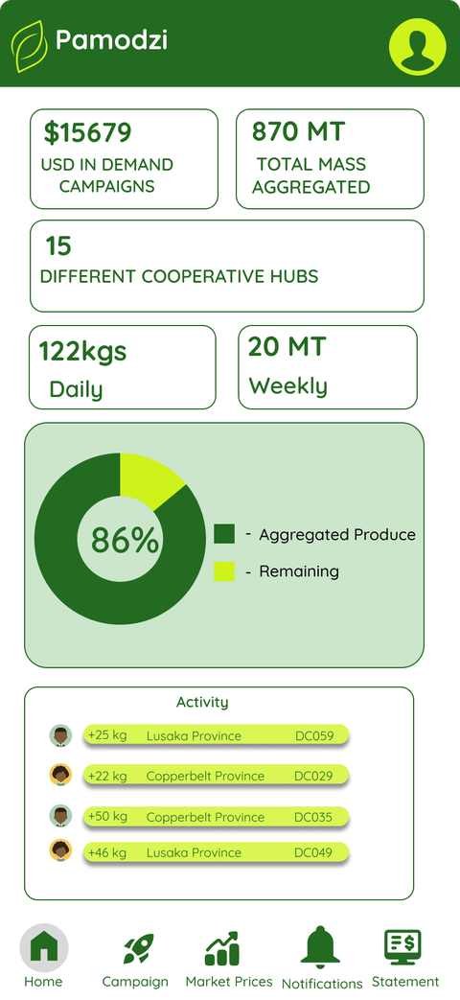

Mobile App
The mobile app (Flutter) is used by Cooperative Agents and Wholesale Buyers for field operations, campaign management, and finance tracking.

Screens
-
Login
Buyer login/signup plus a separate agent login path (
agent-login.dart,buyer-login.dart,buyer-signup.dart). -
Home Dashboard
Campaign KPIs, aggregation progress, activity feed (
homescreen.dart). -
Demand Campaign
Buyer launches a funded campaign — crop, quantity, grade, moisture, province (
demand_campaign_form/demand_campaign.dart). -
Profile
Account settings, theme switching (
profile_screen.dart). -
Campaign List
Active/aggregating/fulfilled campaigns at a glance (
campaign_list/campaign_list.dart). -
Produce Verification
Agent flow for approving/rejecting a farmer's listing (
ProduceVerificationBody). -
Farmer Registration
Agent onboards a farmer on their behalf (
FarmerRegistrationBody). -
Market Price
Price trend charts by crop (
MarketPriceScreen).
Screens in Detail

Buyer login with email/password. A separate "Login as Cooperative Agent" button routes to staff_id-based auth instead.
Demand campaign value, mass aggregated, cooperative hub count, daily/weekly volume, aggregation-progress ring, and a recent-activity feed by province.

Crop, quantity, grade, moisture, and province — maps directly to the demandcampaign table in Database.

Confirm-before-logout modal, consistent with the token-blacklist logout flow in Security.
Remaining screens
Campaign List, Produce Verification, Farmer Registration, and Market Price don't have exports yet — add them here the same way once available.
Architecture Pattern
Navigation routing, screen state lifecycle, and view component structure are centered on MainScreen and PamodziBottomNav.
-
Onboarding & Authentication
Onboarding carousel (
PamodziOnboardingFlow), agent login (AgentLoginScreen), buyer login/signup (buyer-login.dart,buyer-signup.dart). -
Operations
Farmer registration (
FarmerRegistrationBody), produce quality verification (ProduceVerificationBody). -
Marketplace & Finance
Active demand campaigns (
CampaignListBody), market price charts (MarketPriceScreen), financial statements (FinancialDetailsScreen). -
Settings
Dynamic light/dark theme switching, user profile management (
ProfileScreen).
Offline Behavior
Local data persistence with delayed synchronization, built for low-connectivity rural regions.
Project Structure
pamodzi/ — full Flutter project tree
pamodzi/
├── .github/
├── android/
├── assets/
├── build/
├── fonts/
├── ios/
├── linux/
├── macos/
├── test/
├── web/
├── windows/
├── lib/
│ ├── models/
│ │ ├── campaign.dart
│ │ ├── dashboard_model.dart
│ │ ├── market_price_model.dart
│ │ ├── notification_item.dart
│ │ └── profile_model.dart
│ ├── screens/
│ │ ├── campaign_details/
│ │ │ └── campaign_details.dart
│ │ ├── campaign_list/
│ │ │ └── campaign_list.dart
│ │ ├── demand_campaign_form/
│ │ │ └── demand_campaign.dart
│ │ ├── main/
│ │ │ └── main_screen.dart
│ │ ├── notifications/
│ │ ├── agent-login.dart
│ │ ├── buyer-login.dart
│ │ ├── buyer-signup.dart
│ │ ├── homescreen.dart
│ │ ├── market_price_screen.dart
│ │ ├── profile_screen.dart
│ │ └── splash_screen.dart
│ ├── services/
│ │ └── api_service.dart
│ ├── widgets/
│ │ ├── bottom_nav.dart
│ │ ├── pamodzi_header.dart
│ │ └── status_badge.dart
│ └── main.dart
├── .gitignore
├── analysis_options.yaml
├── pubspec.yaml
├── pubspec.lock
└── README.md